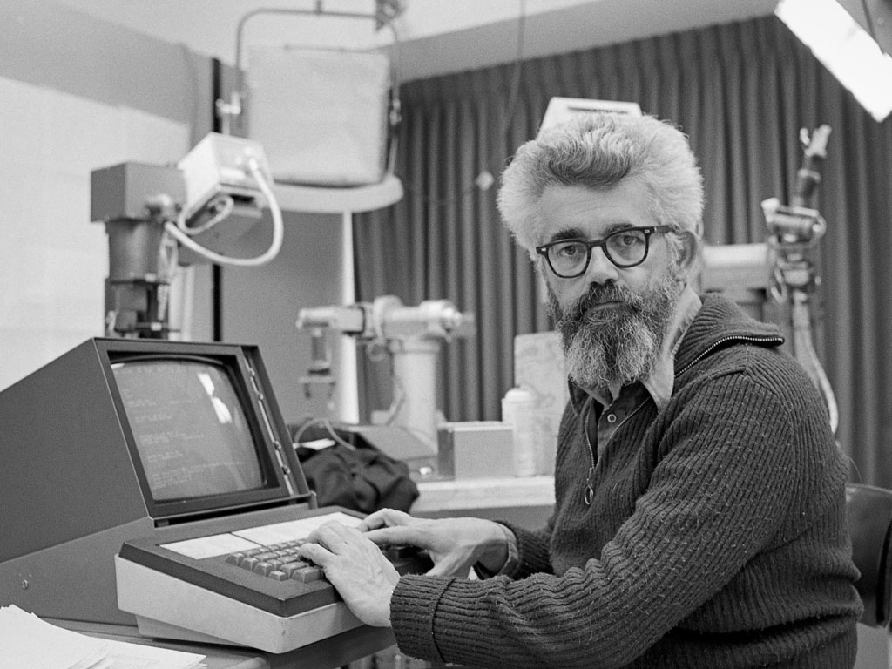

John McCarthy
Father Of Artificial Intelligence

John McCarthy, Inventor of LISP
Here's a timeline of John McCarthy's life:
- 1927: Born in Boston, Massachusetts, U.S.
- 1944: Accepted into Caltech as he used to teach himself college mathematics by studying the textbooks used at that nearby institute, in his teens.
- 1948: Recieved B.S. in mathematics after being readmitted to Caltech as he was expelled before for for faliure to attend physical training courses.
- 1951: Receives Ph.D. in Mathematics from Princeton University as a student of Solomon Lefschetz.
- 1956: Organized the first international conference to emphasize artificial intelligence. Later on in autumn he won MIT research fellowship.
- 1958: proposed the advice taker, which inspired later work on question-answering and logic programming.
- 1962: became a full professor at Stanford aftershort-term appointments at Princeton, Stanford University, Dartmouth, and MIT.
- 1966: With his team at Stanford wrote a computer program used to play a series of chess games with counterparts in the Soviet Union; McCarthy's team lost two games and drew two games
- 1968: Became a conservative Republican after experiencing the Soviet invasion of Czechoslovakia.
- 1971: Recieves Turing Award from the Association for Computing Machinery.
- 1988: Recieves Kyoto Prize
- 1990: Recieves National Medal of Science (USA) in Mathematical, Statistical, and Computational Sciences.
- 1999: Inducted as a Fellow of the Computer History Museum "for his co-founding of the fields of Artificial Intelligence (AI) and timesharing systems, and for major contributions to mathematics and computer science."
- 2000: Retires from being a professor at Stanford.
- 2003: Recieves Benjamin Franklin Medal in Computer and Cognitive Science from the Franklin Institute.
- 2011: Dies at his home in Stanford
- 2012: Named as one of the 2012 Stanford Engineering Heroes
"John McCarthy died aged 84 on 24th October 2011. Since then, much has been written about his life and work (e.g. search for his name and "homage", or "obituary"), and no doubt there will be much more.